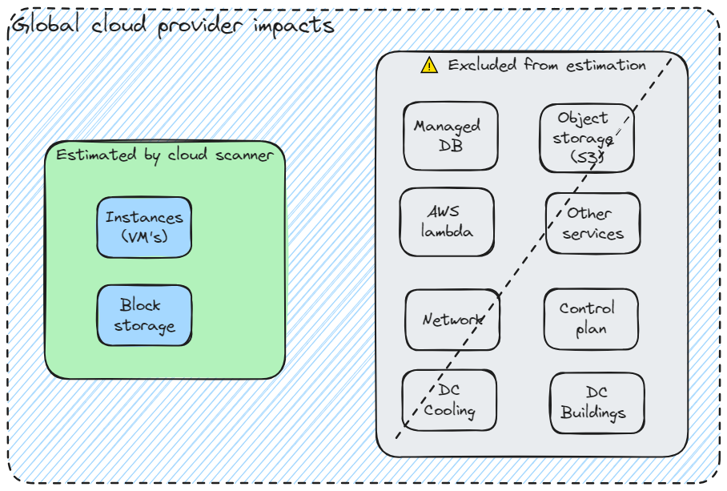

Methodology and source of data
Cloud scanner relies on the Boavizta methodology and data to estimate the impacts of cloud resources.
It performs an inventory of the resources used in a cloud account. It then returns impacts of the use phase but also impacts related to the manufacture of the identified resources (embodied impacts).
The source of impact data
Impact data is retrieved from BOAVIZTA reference data API v1.2.x.
General approach and limits
Cloud scanner estimates impacts according to the duration of use of cloud resources. It also considers the “intensity” of use (like the type of instance and CPU load for a VM or size of a disk for storage). The region of use is also considered to take into account the electricity mix of the region (carbon intensity).
Thibault Simon, David Ekchajzer, Adrien Berthelot, Eric Fourboul, Samuel Rince, et al.. BoaviztAPI: a bottom-up model to assess the environmental impacts of cloud services. HotCarbon’24. Workshop on Sustainable Computer Systems, Jul 2024, Santa Cruz, United States. ⟨hal-04621947v1⟩
The general approach is to map cloud vendor specific ressources, either to Boavizta cloud resources (like for VM instances) or to more generic components (Block storage volumes are approximated as Boavizta HDD or SSD).
But this approach means that a large portion of the cloud provider infrastructure is excluded from the estimation.
⚠ Cloud scanner underestimates the impacts of a cloud account. Because it only considers the instances and block storage, many additional sources of impacts (network, potential redundancy, cloud control plan, buildings…) are not included in the estimation.

See also other limits.
Methodology
The Boavizta methodology is described in Digital & environment : How to evaluate server manufacturing footprint, beyond greenhouse gas emissions? | Boavizta
The impacts (use and embedded) are attributed according to the principles described in Cloud instances - Boavizta API documentation.
The results of cloud scanner are similar to what you can visualize in Datavizta, but with automated inventory.
- Boavizta website: https://www.boavizta.org/en